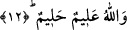

Çünkü onun nesebi, din yolu ile olan bir neseptir. Nitekim kendisine: “Sizin âileniz
kimdir, yâ Rasûlallah?” diye sorulmuş. O da: “Benim âilem, takvâ sâhibi bütün
müslümanlardır.”[220] buyurmuştur.
Din ehli ancak sebep ve neseple ilgili alâkaları, erkeklik, dişilik, çalışma ve güzel
isti’dâd sâhibi olma durumlarına göre birbirlerine vâris olurlar. Bunların bıraktıkları
mîras ise, ancak dînî ve ledünnî ilimlerdir. Nitekim Hz. Peygamber (s.a.): “Âlimler
peygamberlerin vârisleridir. Peygamberler ise ne dinar, ne de dirhem bırakırlar.
Onlar sâdece ilim bırakırlar. Kim bu ilmi alırsa çok büyük pay almış demektir.”[221]
Mevlânâ Celâleddîn Rûmî (k.s.) şöyle diyor:
Mâdem ki şeyhe intisâb ettin cıvık olma
Su gibi dökülen çamur gibi gevşek olma.
Mâdem ki tuttun pirin eteğini, olasın teslîm,
Hızırın hükmündeki Musâ gibi yürü dâim.
Sen taş, kaya ya da mermer olsan eğer,
Bir ehl-i dilin hizmetinde olursun mücevher.
Çünkü güzel meyve, bahçesini de güzelleştirir
Allah adamları seni adamlığa eriştirir.
12- Yapacakları vasiyetten ve borçtan sonra eşlerinizin, eğer çocukları yoksa,
bıraktıklarının yarısı sizindir. Çocukları varsa bıraktıklarının dörtte biri sizindir.
Çocuğunuz yoksa, sizin de, yapacağınız vasiyetten ve borçtan sonra, bıraktığınızın
dörtte biri onlarındır (zevcelerinizindir). Çocuğunuz varsa, bıraktığınızın sekizde
biri onlarındır. Eğer bir erkek veya kadının, ana-babası ve çocukları bulunmadığı
halde (kelâle şeklinde) malı mîrasçılara kalırsa ve bir erkek yâhut bir kızkardeşi
varsa, her birine altıda bir düşer. Bundan fazla iseler üçte bire ortaktırlar. (Bu